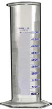
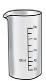
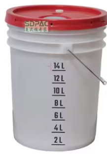
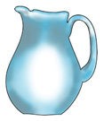
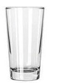

Tujifunze ujazo
Ujazo ni kiwango kinachojaza kitu au kifaa. Tunaweza kulinganisha ujazo wa vitu kwa kuangalia kiasi kilichowekwa. Kuna vitu vyenye ujazo mkubwa na vyenye ujazo mdogo.
Mfano
Kikombe kina ujazo mdogo kuliko ndoo.
Tubaini vipimio rasmi vya ujazo



Tubaini vipimio visivyo rasmi vya ujazo


